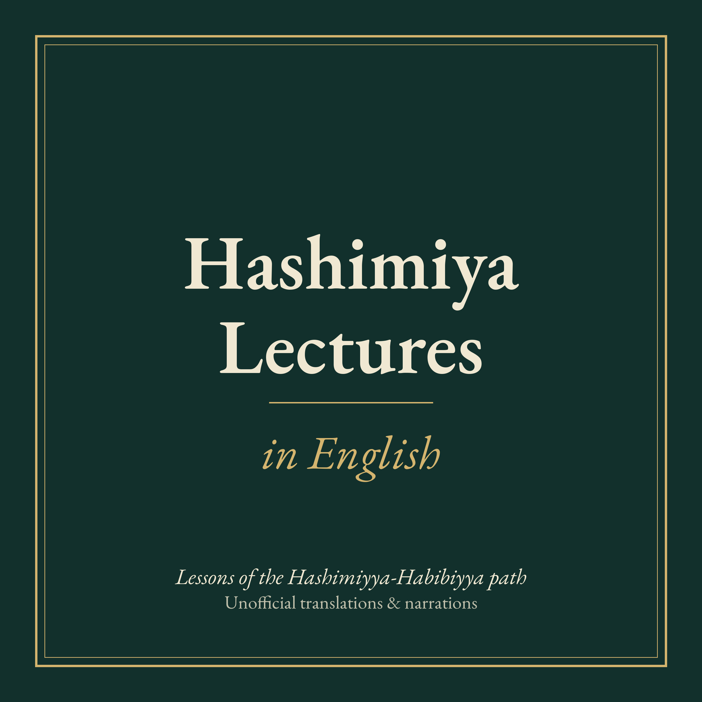

Unofficial English translations and narrations of the lessons of Shaykh (Sidi Mawlay) Abd al-Kabir al-Balghithi of the Hashimiyya-Habibiyya Darqawiyya-Shadhiliyya order, originally delivered in Moroccan Arabic and Classical Arabic on the YouTube channel https://www.youtube.com/@tariqalhashimiya. Each episode is an edited English rendering read aloud by a synthetic voice; it is not affiliated with or endorsed by the channel. Please refer to the original recordings for the Shaykh's own words.
Subscribe: add this feed URL in your podcast app: https://fardeem.github.io/hashimiya-lectures-english/feed.xml · RSS feed
Download MP3 · PDF translation · Original lecture (YouTube)
Commentary on the Diwan of Sidi Muhammad ibn al-Habib, Poem 2, al-Ta'iyya al-Kubra, Part 1. A lesson by Shaykh Abd al-Kabir al-Balghithi, recorded 30 October 2026.